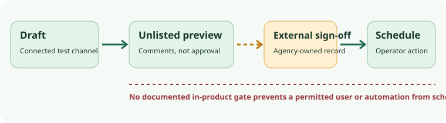

Postiz v2.25.0 · source and documentation audit · 7 Oct 2026
Postiz preview comments do not enforce client sign-off.
Postiz documents a draft and unlisted preview/comment path. Its approval guidance says the conversation does not set an “approved” flag that blocks publication. An agency must keep an auditable decision elsewhere and limit who can schedule. If a contract requires an enforced two-person gate before any post can be scheduled or published, Postiz alone is not suitable on this evidence.

The one-channel, fictional path
Use only the fictional text “The fictional October library hours are now posted.” The example channel is a separately permissioned Bluesky test account. The path is documented, not observed.
- Connect a test channel first.The quickstart selects a connected account before composing. A Bluesky connection needs a handle and app password even though its provider setup needs no developer-app key. The API draft also belongs to an integration. These sources do not establish that an in-app draft can be saved with no channel. Do not promise a credential-free Postiz draft.
- Save as Draft, not Post Now or Add to calendar.The scheduling guide says a draft is ignored by the scheduler. A draft state is not an approval record.
- Share the unlisted preview only with the intended reviewer.The approval page says a recipient without a Postiz account can see the rendered post and comment but not the broader calendar. It also says the URL is not password-protected: anyone with it can read and comment. Anonymous comments, added in the release note, do not prove reviewer identity. Keep sensitive client text and media out of this trial.
- Record sign-off separately, then schedule deliberately.A named agency operator should reconcile comments to an external versioned client approval record. The team-role guide gives ordinary Users work on channels and posts, not a reviewer-only permission. The create-post API accepts now, schedule and draft; the release note also names an agent scheduling tool. Inference: a permitted person or automation may bypass a comment-only process. Exact tagged permission checks were not traced or tested.
- Reconcile the provider outcome.Current architecture describes Temporal-triggered scheduled publishing and outbound provider work. The quickstart describes published/error calendar states; post actions notes a provider may accept content while Postiz misses its post ID. A local status alone is not independent proof of publication. Check the provider destination before retrying an unknown result.
Decision by job
| Job | Documented support | Stop condition |
|---|---|---|
| Feedback on a draft | Draft ignored by scheduler; unlisted preview and comments, including anonymous comments in v2.25.0. | Not private sign-off. Connect only a test channel; archive approval elsewhere. Test access and draft behavior on a pinned private fixture before client use. |
| Enforced two-person approval | No documented hard gate. The approval guidance explicitly says comments do not set a blocking approved flag. | Do not use Postiz alone when this gate is mandatory. External enforcement or a custom, separately tested control is required across UI, API and agent paths. |
| Scheduled live posting | Docs describe scheduler, provider outbound and failure status. | No provider, permission, retry, credential, restore or security test occurred. Not cleared for a real client account. |
Self-hosting and failure ownership
The tagged README identifies the repository as the self-hosted edition, distinct from managed Cloud, and states AGPL-3.0. Its root manifest also declares AGPL-3.0. Those are repository-level facts, not a licence for every dependency or provider. The optional design editor has a separate commercial SDK production licence. The self-hoster operates Postgres, Redis, Temporal, upload storage, backups, upgrades, time configuration, secret handling, egress and logs under the current Compose and requirements guidance. A Bluesky app password still enters the instance; documentation's encrypted-storage claim is not a key-management audit.
Temporal provides durable scheduling, but the scheduling guide says provider-rejected posts are not silently retried. The v2.23.0 release note claims duplicate-post protection for interrupted pending workflows; that is not tested exactly-once delivery. Retain post ID, content and time, inspect Postiz error state and Temporal/backend records, then verify the provider destination before manual rescheduling.
The release list shows v2.25.0 as the current release at this check and says v2.24.0 addressed September advisories. The advisory list includes credential-generation and enterprise-endpoint issues. Displayed advisory version fields do not align cleanly with release numbering; do not assume an arbitrary deployed image is patched. Reconcile exact image digest, migrations and applicable advisories before Internet exposure or credentials. This report did not assess vulnerabilities.
Safe next step and open questions
Write the fictional post offline and obtain feedback without installing Postiz or creating a preview URL. A later private Postiz trial requires authorization, a separately permissioned Bluesky test account and app password, pinned image and migrations, an isolated deployment, and a documented stop before any real-client connection. Test exact UI/API/agent permissions, preview access and expiry, duplicate/unknown provider outcomes, credential lifecycle and restore. The no-channel in-app draft question remains open. The release note supports comments, but the workflow and role details above come from living documentation; tagged authorization/controller and provider code were not traced. Browse the research library.